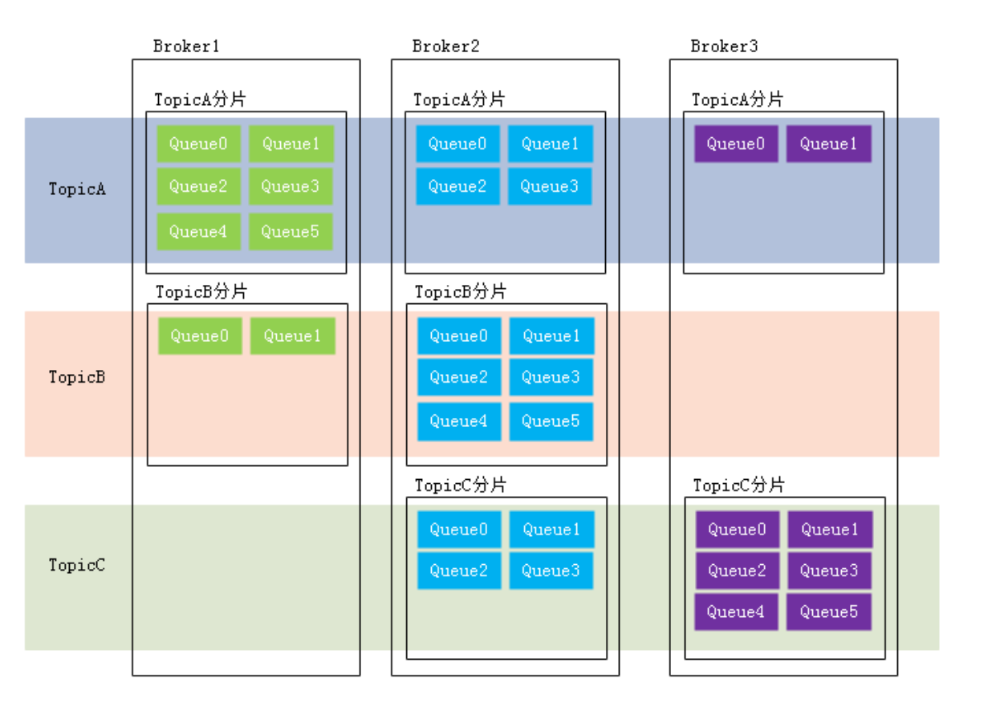

RocketMQ
一、基本概念
1、消息(Message)
消息是指，消息系统所传输的物理载体，生产和消费数据的最小单位，每个消息必须属于一个主题。
2、主题(Topic)
Topic表示一类消息的集合，每个主题包含若干条消息，是RocketMQ进行消息订阅的基本单位。
一个生产者可以同时发送多种Topic的消息，而一个消费者只能订阅和消费一种Topic的消息
3、标签（TAG）
4、队列（Queue）
存储消息的物理实体。一个Topic中可以包含多个Queue，每个Queue中存放的就是该Topic的消息。一个Topic的Queue也被称为一个Topic中消息的分区。
一个Topic中Queue中的消息只能被一个消费者组中的一个消费者消费。一个Queue中的消息不允许同一个消费者组中的多个消费者同时消费。
5、消息标识（MessageId/Key）
RocketMQ中每个消息都拥有唯一的MessageId，且可以携带具有业务标识的Key，以方便对消息的查询。不过需要注意的是，MessageId有两个：在生产者send()消息时会自动生成一个MessageId(msgId)，当消息达到Broker之后，Broker也会自动生成一个MessageId(offsetMsgId)。msgId、offsetMsgId与key都称为消息标识。
msgId：由producer生成，其生成规则为：
producerIp + 进程pid + messageClientIDSetter的ClassLoader的hashCode + 当前时间 + AutomicInteger自增计数器
offsetMsgId：由broker端生成，其生成规则为：brokerIp + 物理分区的offset（也就是queue中的偏移量）
key: 由用户指定的业务相关的唯一标识
二、系统架构

RocketMQ架构上主要分为四部分构成：
1 Producer
消息生产者，负责生产消息。Producer通过MQ的负载均衡模块选择相应的Broker集群队列进行消息投递，投递的过程支持快速失败并且低延迟。
RocketMQ中的消息生产者都是以生产者组（Producer Group）的形式出现的。生产者组是同一类生产者的集合，这类Producer发送相同Topic类型的消息。一个生产者组可以同时发送多个主题的消息。
2 Consumer
消息消费者，负责消费消息。一个消息消费者会从Broker服务器中获取到消息，并对消息进行相关业务处理。
RocketMQ中的消息消费者都是以消费者组（Consumer Group）的形式出现的。消费者组是同一类消费者的集合，这类Consumer消费的是同一个Topic类型的消息。消费者组使得在消息消费方面，实现负载均衡（将一个Topic中的不同的Queue平均分配给同一个Consumer Group的不同的Consumer，注意，并不是将消息负载均衡）和容错（一个Consmer挂了，该Consumer Group中的其它Consumer可以接着消费原Consumer消费的Queue）的目标变得非常容易。

消费者组中Consumer的数量应该小于等于订阅Topic的Queue数量。如果超出Queue数量，则多出的Consumer将不能消费消息。
不过，一个Topic类型的消息可以被多个消费者组同时消费。
注意，
1）消费者组只能消费一个Topic的消息，不能同时消费多个Topic消息
2）一个消费者组中的消费者必须订阅完全相同的Topic
3 Name Server
NameServer是一个Broker和Topic路由的注册中心，支持Broker的动态注册和发现。
主要包括两个功能：
Broker管理
路由信息管理
4 Broker
Broker充当消息中转角色，负责存储消息、转发消息。Broker在RocketMQ系统中负责接收并存储从生产者发送来的消息，同时为消费者的拉取请求做准备。Broker同时也存储着消息相关的元数据，包括消费者组消费进度偏移offset、主题、队列等。
Remoting Module：整个Broker的实体，负责处理来自clients端的请求。而这个Broker实体则由以下模块构成。
Client Manager：客户端管理器。负责接收、解析客户端(Producer/Consumer)请求，管理客户端。例如，维护Consumer的Topic订阅信息
Store Service：存储服务。提供方便简单的API接口，处理消息存储到物理硬盘和消息查询功能。
HA Service：高可用服务，提供Master Broker 和 Slave Broker之间的数据同步功能。
Index Service：索引服务。根据特定的Message key，对投递到Broker的消息进行索引服务，同时也提供根据Message Key对消息进行快速查询的功能。
三、Linux启动
1.启动nameServer和broker
## 启动nameServer |
2.消息收发
在进行消息收发之前，我们需要告诉客户端NameServer的地址，RocketMQ有多种方式在客户端中设置NameServer地址，这里我们利用环境变量NAMESRV_ADDR
export NAMESRV_ADDR=localhost:9876 |
docker启动
1.拉取镜像
docker pull rocketmqinc/rocketmq |
2.创建数据挂载目录
mkdir -p /docker/rocketmq/data/namesrv/logs /docker/rocketmq/data/namesrv/store |
3.启动nameserver
docker run -d --restart=always --name rmqnamesrv - -p 9876:9876 -v /Users/dongnan/devEnv/docker/rocketmq/data/namesrv/logs:/root/logs -v /Users/dongnan/devEnv/docker/rocketmq/data/namesrv/store:/root/store -e "MAX_POSSIBLE_HEAP=100000000" rocketmqinc/rocketmq sh mqnamesrv |
4.编辑配置文件
vi /docker/rocketmq/conf/broker.conf |
5.启动broker
docker run -d \ |
6.部署rocketmq界面
docker pull styletang/rocketmq-console-ng |
四、集群搭建
1.数据复制和刷盘策略
复制策略
复制策略是Broker的Master与Slave间的数据同步方式。分为同步复制与异步复制：
同步复制：消息写入master后，master会等待slave同步数据成功后才向producer返回成功ACK
异步复制：消息写入master后，master立即向producer返回成功ACK，无需等待slave同步数据成功
异步复制策略会降低系统的写入延迟，RT变小，提高了系统的吞吐量
刷盘策略
刷盘策略指的是broker中消息的落盘方式，即消息发送到broker内存后消息持久化到磁盘的方式。分为同步刷盘与异步刷盘：
- 同步刷盘：当消息持久化到broker的磁盘后才算是消息写入成功
- 异步刷盘：当消息写入到broker的内存后即表示消息写入成功，无需等待消息持久化到磁盘。
最佳实践
一般会为Master配置RAID10磁盘阵列，然后再为其配置一个slave。即利用了RAID10磁盘阵列的高效、安全性，又解决了可能会影响订阅的问题
五、工作原理
1.消息的生产
消息的生产过程
Producer可以将消息写入到某broker中的某Queue中，过程如下
Producer发送消息之前，会先向NameServer发出获取
消息Topic的路由信息的请求NameServer返回该
Topic的路由表及Broker列表Producer根据代码中指定的Queue选择策略，从Queue列表中选出一个队列，用于后续存储消息
Producer对消息做一些特殊的处理，例如，消息本身超过4M，则进行压缩
Producer向选择出的Queue所在的broker发出RPC请求，将消息发送到选择出的Queue
路由表：实际是一个Map，key为Topic的名称，value是一个QueueData实例列表，QueueData并不是一个Queue对应一个QueueData，而是一个Broker中该Topic的所有Queue对应一个QueueData。即，只要涉及到该Topic的Broker，一个Broker对应一个QueueData。QueueData中包含brokerName。简单来说，路由表的key为Topic名称，value则为所有涉及该Topic的
BrokerName列表。
一套brokerName名称相同的Master-Slave小集群对应一个 BrokerData。BrokerData中包含brokerName及一个map。该map的key为brokerId，value为该 broker对应的地址。brokerId为0表示该broker为Master，非0表示Slave。
Queue选择算法
轮询算法
最小投递延迟算法
2.消息的存储
abort：该文件在Broker启动后会自动创建，正常关闭Broker，该文件会自动消失。若在没有启动Broker的情况下，发现这个文件是存在的，则说明之前Broker的关闭是非正常关闭。
checkpoint：其中存储着commitlog、consumequeue、index文件的最后刷盘时间戳
commitlog：其中存放着commitlog文件，而消息是写在commitlog文件中的
config：存放着Broker运行期间的一些配置数据
consumequeue：其中存放着consumequeue文件，队列就存放在这个目录中
index：其中存放着消息索引文件indexFile
lock：运行期间使用到的全局资源锁
3.Rebalance机制
rebalance即再均衡，指的是，将一个topic下的多个Queue在同一个Consumer Group中的多个Consumer间进行重新分配的过程。
Rebalance限制
由于⼀个队列最多分配给⼀个消费者，因此当某个消费者组下的消费者实例数量大于队列的数量时，多余的消费者实例将分配不到任何队列
4.Queue分配算法
平均分配策略

该算法是要根据
avg = QueueCount / ConsumerCount的计算结果进行分配的。如果能够整除，则按顺序将avg个Queue逐个分配Consumer；如果不能整除，则将多余出的Queue按照Consumer顺序逐个分配。环形平均策略

环形平均算法是指，根据消费者的顺序，依次在由queue队列组成的环形图中逐个分配。
一致性hash策略

该算法会将consumer的hash值作为Node节点存放到hash环上，然后将queue的hash值也放到hash环上，通过顺时针方向，距离queue最近的那个consumer就是该queue要分配的consumer。
同机房策略

该算法会根据queue的部署机房位置和consumer的位置，过滤出当前consumer相同机房的queue。然后按照平均分配策略或环形平均策略对同机房queue进行分配。如果没有同机房queue，则按照平均分配策略或环形平均策略对所有queue进行分配。
六、offset管理
这里的offset指的是Consumer的消费进度offset。消费进度offset是用来记录每个Queue的不同消费组的消费进度的。根据消费进度记录器的不同，可以分为两种模式：本地模式和远程模式。
1 offset本地管理模式
当消费模式为广播消费时，offset使用本地模式存储。因为每条消息会被所有的消费者消费，每个消费者管理自己的消费进度，各个消费者之间不存在消费进度的交集。Consumer在广播消费模式下offset相关数据以json的形式持久化到Consumer本地磁盘文件中，默认文件路径为当前用户主目录下的.rocketmq_offsets/${clientId}/${group}/Offsets.json。其中${clientId}为当前消费者id，默认为ip@DEFAULT；${group}为消费者组名称。
2 offset远程管理模式
当消费模式为集群消费时，offset使用远程模式管理。因为所有Cosnumer实例对消息采用的是均衡消费，所有Consumer共享Queue的消费进度。Consumer在集群消费模式下offset相关数据以json的形式持久化到Broker磁盘文件中，文件路径为当前用户主目录下的store/config/consumerOffset.json。
Broker启动时会加载这个文件，并写入到一个双层Map（ConsumerOffsetManager）。外层map的key为topic@group，value为内层map。内层map的key为queueId，value为offset。当发生Rebalance时，新的Consumer会从该Map中获取到相应的数据来继续消费。
集群模式下offset采用远程管理模式，主要是为了保证Rebalance机制。
3 offset用途
消费者是如何从最开始持续消费消息的？消费者要消费的第一条消息的起始位置是用户自己通过consumer.setConsumeFromWhere()方法指定的。
Properties properties = new Properties(); |
1 2 3 4 5 6 7 8 9 |
在Consumer启动后，其要消费的第一条消息的起始位置常用的有三种，这三种位置可以通过枚举类型常量设置。这个枚举类型为ConsumeFromWhere。
CONSUME_FROM_LAST_OFFSET：从queue的当前最后一条消息开始消费 |
CONSUME_FROM_FIRST_OFFSET：从queue的第一条消息开始消费 |
CONSUME_FROM_TIMESTAMP：从指定的具 体时间戳位置的消息开始消费。这个具体时间戳 |
consumer.setConsumeTimestamp(“20210701080000”) yyyyMMddHHmmss |
当消费完一批消息后，Consumer会提交其消费进度offset给Broker，Broker在收到消费进度后会将其更新到那个双层Map（ConsumerOffsetManager）及consumerOffset.json文件中，然后向该Consumer进行ACK，而ACK内容中包含三项数据：当前消费队列的最小offset（minOffset）、最大offset（maxOffset）、及下次消费的起始offset（nextBeginOffset）。
4 重试队列
当rocketMQ对消息的消费出现异常时，会将发生异常的消息的offset提交到Broker中的重试队列。系统在发生消息消费异常时会为当前的topic@group创建一个重试队列，该队列以%RETRY%开头，到达重试时间后进行消费重试。
5 offset的同步提交与异步提交
集群消费模式下，Consumer消费完消息后会向Broker提交消费进度offset，其提交方式分为两种：
同步提交：消费者在消费完一批消息后会向broker提交这些消息的offset，然后等待broker的成功响应。若在等待超时之前收到了成功响应，则继续读取下一批消息进行消费（从ACK中获取nextBeginOffset）。若没有收到响应，则会重新提交，直到获取到响应。而在这个等待过程中，消费者是阻塞的。其严重影响了消费者的吞吐量。
异步提交：消费者在消费完一批消息后向broker提交offset，但无需等待Broker的成功响应，可以继续读取并消费下一批消息。这种方式增加了消费者的吞吐量。但需要注意，broker在收到提交的offset后，还是会向消费者进行响应的。可能还没有收到ACK，此时Consumer会从Broker中直接获取nextBeginOffset。
七、消费幂等
1 什么是消费幂等
当出现消费者对某条消息重复消费的情况时，重复消费的结果与消费一次的结果是相同的，并且多次消费并未对业务系统产生任何负面影响，那么这个消费过程就是消费幂等的。
幂等：若某操作执行多次与执行一次对系统产生的影响是相同的，则称该操作是幂等的。在互联网应用中，尤其在网络不稳定的情况下，消息很有可能会出现重复发送或重复消费。如果重复的消息可能会影响业务处理，那么就应该对消息做幂等处理。
2 消息重复的场景分析
什么情况下可能会出现消息被重复消费呢？最常见的有以下三种情况：
发送时消息重复
当一条消息已被成功发送到Broker并完成持久化，此时出现了网络闪断，从而导致Broker对Producer应答失败。 如果此时Producer意识到消息发送失败并尝试再次发送消息，此时Broker中就可能会出现两条内容相同并且Message ID也相同的消息，那么后续Consumer就一定会消费两次该消息。
消费时消息重复
消息已投递到Consumer并完成业务处理，当Consumer给Broker反馈应答时网络闪断，Broker没有接收到消费成功响应。为了保证消息至少被消费一次的原则，Broker将在网络恢复后再次尝试投递之前已被处理过的消息。此时消费者就会收到与之前处理过的内容相同、Message ID也相同的消息。Rebalance时消息重复当Consumer Group中的Consumer数量发生变化时，或其订阅的Topic的Queue数量发生变化时，会触发Rebalance，此时Consumer可能会收到曾经被消费过的消息。
3 通用解决方案
两要素
幂等解决方案的设计中涉及到两项要素：幂等令牌，与唯一性处理。只要充分利用好这两要素，就可以设计出好的幂等解决方案。
幂等令牌：是生产者和消费者两者中的既定协议，通常指具备唯一业务标识的字符串。例如，订单号、流水号。一般由Producer随着消息一同发送来的。
唯一性处理：服务端通过采用一定的算法策略，保证同一个业务逻辑不会被重复执行成功多次。
例如，对同一笔订单的多次支付操作，只会成功一次。
解决方案
对于常见的系统，幂等性操作的通用性解决方案是：
首先通过缓存去重。在缓存中如果已经存在了某幂等令牌，则说明本次操作是重复性操作；若缓存没有命中，则进入下一步。
在唯一性处理之前，先在数据库中查询幂等令牌作为索引的数据是否存在。若存在，则说明本次操作为重复性操作；若不存在，则进入下一步。
在同一事务中完成三项操作：唯一性处理后，将幂等令牌写入到缓存，并将幂等令牌作为唯一索引的数据写入到DB中。
第 1 步已经判断过是否是重复性操作了，为什么第 2 步还要再次判断？能够进入第 2 步，说明已经不是重复操作了，第 2 次判断是否重复？当然不重复。一般缓存中的数据是具有有效期的。缓存中数据的有效期一旦过期，就是发生缓存穿透，使请求直接就到达了DBMS。
解决方案举例
以支付场景为例：
1. 当支付请求到达后，首先在Redis缓存中却获取key为支付流水号的缓存value。若value不空，则说明本次支付是重复操作，业务系统直接返回调用侧重复支付标识；若value为空，则进入下一步操作 |
4 消费幂等的实现
消费幂等的解决方案很简单：为消息指定不会重复的唯一标识。因为Message ID有可能出现重复的情况，所以真正安全的幂等处理，不建议以Message ID作为处理依据。最好的方式是以业务唯一标识作为幂等处理的关键依据，而业务的唯一标识可以通过消息Key设置。
以支付场景为例，可以将消息的Key设置为订单号，作为幂等处理的依据。具体代码示例如下：
消费者收到消息时可以根据消息的Key即订单号来实现消费幂等：
Message message = new Message(); |
1 |
RocketMQ能够保证消息不丢失，但不能保证消息不重复。
八、消息堆积与消费延迟
1 概念
消息处理流程中，如果Consumer的消费速度跟不上Producer的发送速度，MQ中未处理的消息会越来越多（进的多出的少），这部分消息就被称为堆积消息。消息出现堆积进而会造成消息的消费延迟。
以下场景需要重点关注消息堆积和消费延迟问题：
业务系统上下游能力不匹配造成的持续堆积，且无法自行恢复。
业务系统对消息的消费实时性要求较高，即使是短暂的堆积造成的消费延迟也无法接受。
2 产生原因分析
Consumer使用长轮询Pull模式消费消息时，分为以下两个阶段：
consumer.registerMessageListener(new MessageListenerConcurrently() { |
1 2 3 4 5 6 7 8 9 |
10 |
消息拉取
Consumer通过长轮询Pull模式批量拉取的方式从服务端获取消息，将拉取到的消息缓存到本地缓冲队列中。对于拉取式消费，在内网环境下会有很高的吞吐量，所以这一阶段一般不会成为消息堆积的瓶颈。
一个单线程单分区的低规格主机(Consumer，4C8G)，其可达到几万的TPS。如果是多个分区多个线程，则可以轻松达到几十万的TPS。
消息消费
Consumer将本地缓存的消息提交到消费线程中，使用业务消费逻辑对消息进行处理，处理完毕后获取到一个结果。这是真正的消息消费过程。此时Consumer的消费能力就完全依赖于消息的消费耗时和消费并发度了。如果由于业务处理逻辑复杂等原因，导致处理单条消息的耗时较长，则整体的消息吞吐量肯定不会高，此时就会导致Consumer本地缓冲队列达到上限，停止从服务端拉取消息。
结论
消息堆积的主要瓶颈在于客户端的消费能力，而消费能力由消费耗时和消费并发度决定。注意，消费耗时的优先级要高于消费并发度。即在保证了消费耗时的合理性前提下，再考虑消费并发度问题。
3 消费耗时
影响消息处理时长的主要因素是代码逻辑。而代码逻辑中可能会影响处理时长代码主要有两种类型：CPU内部计算型代码和外部I/O操作型代码。通常情况下代码中如果没有复杂的递归和循环的话，内部计算耗时相对外部I/O操作来说几乎可以忽略。所以外部IO型代码是影响消息处理时长的主要症结所在。外部IO操作型代码举例：
- 读写外部数据库，例如对远程MySQL的访问
- 读写外部缓存系统，例如对远程Redis的访问
- 下游系统调用，例如Dubbo的RPC远程调用，Spring Cloud的对下游系统的Http接口调用
关于下游系统调用逻辑需要进行提前梳理，掌握每个调用操作预期的耗时，这样做是为了能够判断消费逻辑中IO操作的耗时是否合理。通常消息堆积是由于下游系统出现了服务异常或达到了DBMS容量限制，导致消费耗时增加。服务异常，并不仅仅是系统中出现的类似 500 这样的代码错误，而可能是更加隐蔽的问题。例如，网络带宽问题。达到了DBMS容量限制，其也会引发消息的消费耗时增加。
4 消费并发度
一般情况下，消费者端的消费并发度由单节点线程数和节点数量共同决定，其值为单节点线程数*节点数量。不过，通常需要优先调整单节点的线程数，若单机硬件资源达到了上限，则需要通过横向扩展来提高消费并发度。
单节点线程数，即单个Consumer所包含的线程数量
节点数量，即Consumer Group所包含的Consumer数量
对于普通消息、延时消息及事务消息，并发度计算都是单节点线程数*节点数量。但对于顺序消息则是不同的。顺序消息的消费并发度等于Topic的Queue分区数量。
1 ）全局顺序消息：该类型消息的Topic只有一个Queue分区。其可以保证该Topic的所有消息被顺序消费。为了保证这个全局顺序性，Consumer Group中在同一时刻只能有一个Consumer的一个线程进行消费。所以其并发度为 1 。
2 ）分区顺序消息：该类型消息的Topic有多个Queue分区。其仅可以保证该Topic的每个Queue分区中的消息被顺序消费，不能保证整个Topic中消息的顺序消费。为了保证这个分区顺序性，每个Queue分区中的消息在Consumer Group中的同一时刻只能有一个Consumer的一个线程进行消费。即，在同一时刻最多会出现多个Queue分蘖有多个Consumer的多个线程并行消费。所以其并发度为Topic的分区数量。
九、消息的清理
消息被消费过后会被清理掉吗？不会的。
消息是被顺序存储在commitlog文件的，且消息大小不定长，所以消息的清理是不可能以消息为单位进行清理的，而是以commitlog文件为单位进行清理的。否则会急剧下降清理效率，并实现逻辑复杂。commitlog文件存在一个过期时间，默认为 72 小时，即三天。除了用户手动清理外，在以下情况下也会被自动清理，无论文件中的消息是否被消费过：
文件过期，且到达清理时间点（默认为凌晨 4 点）后，自动清理过期文件
文件过期，且磁盘空间占用率已达过期清理警戒线（默认75%）后，无论是否达到清理时间点，都会自动清理过期文件
磁盘占用率达到清理警戒线（默认85%）后，开始按照设定好的规则清理文件，无论是否过期。
默认会从最老的文件开始清理
==磁盘占用率达到系统危险警戒线（默认90%）后，Broker将拒绝消息写入==
需要注意以下几点：
1 ）对于RocketMQ系统来说，删除一个1G大小的文件，是一个压力巨大的IO操作。在删除过程中，系统性能会骤然下降。所以，其默认清理时间点为凌晨 4 点，访问量最小的时间。也正因如果，我们要保障磁盘空间的空闲率，不要使系统出现在其它时间点删除commitlog文件的情况。
2 ）官方建议RocketMQ服务的Linux文件系统采用ext4。因为对于文件删除操作，ext4要比ext3性能更好
第 4 章 RocketMQ应用
一、普通消息
1 消息发送分类
Producer对于消息的发送方式也有多种选择，不同的方式会产生不同的系统效果。
同步发送消息
同步发送消息是指，Producer发出一条消息后，会在收到MQ返回的ACK之后才发下一条消息。该方式的消息可靠性最高，但消息发送效率太低。
异步发送消息
异步发送消息是指，Producer发出消息后无需等待MQ返回ACK，直接发送下一条消息。该方式的消息可靠性可以得到保障，消息发送效率也可以。
单向发送消息
单向发送消息是指，Producer仅负责发送消息，不等待、不处理MQ的ACK。该发送方式时MQ也不返回ACK。该方式的消息发送效率最高，但消息可靠性较差。
二、顺序消息
1 什么是顺序消息
顺序消息指的是，严格按照消息的发送顺序进行消费的消息(FIFO)。
默认情况下生产者会把消息以Round Robin轮询方式发送到不同的Queue分区队列；而消费消息时会从多个Queue上拉取消息，这种情况下的发送和消费是不能保证顺序的。如果将消息仅发送到同一个Queue中，消费时也只从这个Queue上拉取消息，就严格保证了消息的顺序性。
2 有序性分类
根据有序范围的不同，RocketMQ可以严格地保证两种消息的有序性：==分区有序与全局有序==。
全局有序
当发送和消费参与的Queue只有一个时所保证的有序是整个Topic中消息的顺序， 称为全局有序。
在创建Topic时指定Queue的数量。有三种指定方式：
1 ）在代码中创建Producer时，可以指定其自动创建的Topic的Queue数量
2 ）在RocketMQ可视化控制台中手动创建Topic时指定Queue数量
3 ）使用mqadmin命令手动创建Topic时指定Queue数量
分区有序
如果有多个Queue参与，其仅可保证在该Queue分区队列上的消息顺序，则称为分区有序。
如何实现Queue的选择？在定义Producer时我们可以指定消息队列选择器，而这个选择器是我们自己实现了MessageQueueSelector接口定义的。在定义选择器的选择算法时，一般需要使用选择key。这个选择key可以是消息key也可以是其它数据。但无论谁做选择key，都不能重复，都是唯一的。
一般性的选择算法是，让选择key（或其hash值）与该Topic所包含的Queue的数量取模，其结果即为选择出的Queue的QueueId。
取模算法存在一个问题：不同选择key与Queue数量取模结果可能会是相同的，即不同选择key的消息可能会出现在相同的Queue，即同一个Consuemr可能会消费到不同选择key的消息。这个问题如何解决？一般性的作法是，从消息中获取到选择key，对其进行判断。若是当前Consumer需要消费的消息，则直接消费，否则，什么也不做。这种做法要求选择key要能够随着消息一起被Consumer获取到。此时使用消息key作为选择key是比较好的做法。
以上做法会不会出现如下新的问题呢？不属于那个Consumer的消息被拉取走了，那么应该消费该消息的Consumer是否还能再消费该消息呢？同一个Queue中的消息不可能被同一个Group中的不同Consumer同时消费。所以，消费现一个Queue的不同选择key的消息的Consumer一定属于不同的Group。而不同的Group中的Consumer间的消费是相互隔离的，互不影响的。
三、延时消息
1 什么是延时消息
当消息写入到Broker后，在指定的时长后才可被消费处理的消息，称为延时消息。采用RocketMQ的延时消息可以实现定时任务的功能，而无需使用定时器。典型的应用场景是，电商交易中超时未支付关闭订单的场景， 12306 平台订票超时未支付取消订票的场景。
在电商平台中，订单创建时会发送一条延迟消息。这条消息将会在 30 分钟后投递给后台业务系统（Consumer），后台业务系统收到该消息后会判断对应的订单是否已经完成支付。如果未完成，则取消订单，将商品再次放回到库存；如果完成支付，则忽略。
2 延时等级
延时消息的延迟时长不支持随意时长的延迟，是通过特定的延迟等级来指定的。延时等级定义在RocketMQ服务端MessageStoreConfig类中的如下变量中：
即，若指定的延时等级为 3 ，则表示延迟时长为10s，即延迟等级是从 1 开始计数的。当然，如果需要自定义的延时等级，可以通过在broker加载的配置中新增如下配置（例如下面增加了 1天这个等级1d）。配置文件在RocketMQ安装目录下的conf目录中。
3 延时消息实现原理
messageDelayLevel = 1s 5s 10s 30s 1m 2m 3m 4m 5m 6m 7m 8m 9m 10m 20m 30m1h 2h 1d
1
具体实现方案是：
修改消息
Producer将消息发送到Broker后，Broker会首先将消息写入到commitlog文件，然后需要将其分发到相应的consumequeue。不过，在分发之前，系统会先判断消息中是否带有延时等级。若没有，则直接正常分发；若有则需要经历一个复杂的过程：
修改消息的Topic为SCHEDULE_TOPIC_XXXX
根据延时等级，在consumequeue目录中SCHEDULE_TOPIC_XXXX主题下创建出相应的queueId目录与consumequeue文件（如果没有这些目录与文件的话）。
延迟等级delayLevel与queueId的对应关系为queueId = delayLevel -1
需要注意，在创建queueId目录时，并不是一次性地将所有延迟等级对应的目录全部创建完毕，而是用到哪个延迟等级创建哪个目录
修改消息索引单元内容。索引单元中的Message Tag HashCode部分原本存放的是消息的Tag的Hash值。现修改为消息的投递时间。投递时间是指该消息被重新修改为原Topic后再次被写入到commitlog中的时间。投递时间 = 消息存储时间 + 延时等级时间。消息存储时间指的是消息被发送到Broker时的时间戳。将消息索引写入到SCHEDULE_TOPIC_XXXX主题下相应的consumequeue中 SCHEDULE_TOPIC_XXXX目录中各个延时等级Queue中的消息是如何排序的？
是按照消息投递时间排序的。一个Broker中同一等级的所有延时消息会被写入到consumequeue目录中SCHEDULE_TOPIC_XXXX目录下相同Queue中。即一个Queue中消息投递时间的延迟等级时间是相同的。那么投递时间就取决于于消息存储时间了。即按照消息被发送到Broker的时间进行排序的。
投递延时消息
Broker内部有一个延迟消息服务类ScheuleMessageService，其会消费SCHEDULE_TOPIC_XXXX中的消息，即按照每条消息的投递时间，将延时消息投递到目标Topic中。不过，在投递之前会从commitlog中将原来写入的消息再次读出，并将其原来的延时等级设置为 0 ，即原消息变为了一条不延迟的普通消息。然后再次将消息投递到目标Topic中。
ScheuleMessageService在Broker启动时，会创建并启动一个定时器TImer，用于执行相应的定时任务。系统会根据延时等级的个数，定义相应数量的TimerTask，每个TimerTask负责一个延迟等级消息的消费与投递。每个TimerTask都会检 测相应Queue队列的第一条消息是否到期。若第一条消息未到期，则后面的所有消息更不会到期（消息是按照投递时间排序的）；若第一条消息到期了，则将该消息投递到目标Topic，即消费该消息。
将消息重新写入commitlog
延迟消息服务类ScheuleMessageService将延迟消息再次发送给了commitlog，并再次形成新的消息索引条目，分发到相应Queue。
这其实就是一次普通消息发送。只不过这次的消息Producer是延迟消息服务类ScheuleMessageService。
四、事务消息
1 问题引入
这里的一个需求场景是：工行用户A向建行用户B转账 1 万元。
我们可以使用同步消息来处理该需求场景：
1. 工行系统发送一个给B增款 1 万元的同步消息M给Broker |
这其中是有问题的：若第 3 步中的扣款操作失败，但消息已经成功发送到了Broker。对于MQ来说，只要消息写入成功，那么这个消息就可以被消费。此时建行系统中用户B增加了 1 万元。出现了数据不一致问题。
2 解决思路
解决思路是，让第 1 、 2 、 3 步具有原子性，要么全部成功，要么全部失败。即消息发送成功后，必须要保证扣款成功。如果扣款失败，则回滚发送成功的消息。而该思路即使用事务消息。这里要使用分布式事务解决方案。使用事务消息来处理该需求场景：
事务管理器TM向事务协调器TC发起指令，开启全局事务
工行系统发一个给B增款 1 万元的事务消息M给TC
TC会向Broker发送半事务消息prepareHalf，将消息M预提交到Broker。此时的建行系统是看不到Broker中的消息M的
Broker会将预提交执行结果Report给TC。
如果预提交失败，则TC会向TM上报预提交失败的响应，全局事务结束；如果预提交成功，TC会调用工行系统的回调操作，去完成工行用户A的预扣款 1 万元的操作
工行系统会向TC发送预扣款执行结果，即本地事务的执行状态
TC收到预扣款执行结果后，会将结果上报给TM。
TM会根据上报结果向TC发出不同的确认指令
TC在接收到指令后会向Broker与工行系统发出确认指令
预扣款执行结果存在三种可能性：
// 描述本地事务执行状态 |
8. TM会根据上报结果向TC发出不同的确认指令
若预扣款成功（本地事务状态为COMMIT_MESSAGE），则TM向TC发送Global Commit指令 |
TC接收的若是Global Commit指令，则向Broker与工行系统发送Branch Commit指令。此时Broker中的消息M才可被建行系统看到；此时的工行用户A中的扣款操作才真正被确认TC接收到的若是Global Rollback指令，则向Broker与工行系统发送Branch Rollback指令。此时Broker中的消息M将被撤销；工行用户A中的扣款操作将被回滚 |
以上方案就是为了确保消息投递与扣款操作能够在一个事务中，要成功都成功，有一个失败，则全部回滚。 |
以上方案并不是一个典型的XA模式。因为XA模式中的分支事务是异步的，而事务消息方案中的消息预提交与预扣款操作间是同步的。
3 基础
分布式事务
对于分布式事务，通俗地说就是，一次操作由若干分支操作组成，这些分支操作分属不同应用，分布在不同服务器上。分布式事务需要保证这些分支操作要么全部成功，要么全部失败。分布式事务与普通事务一样，就是为了保证操作结果的一致性。
事务消息
RocketMQ提供了类似X/Open XA的分布式事务功能，通过事务消息能达到分布式事务的最终一致。XA是一种分布式事务解决方案，一种分布式事务处理模式。
半事务消息
暂不能投递的消息，发送方已经成功地将消息发送到了Broker，但是Broker未收到最终确认指令，此时该消息被标记成“暂不能投递”状态，即不能被消费者看到。处于该种状态下的消息即半事务消息。
本地事务状态
Producer回调操作执行的结果为本地事务状态，其会发送给TC，而TC会再发送给TM。TM会根据TC发送来的本地事务状态来决定全局事务确认指令。
消息回查
消息回查，即重新查询本地事务的执行状态。本例就是重新到DB中查看预扣款操作是否执行成功。注意，消息回查不是重新执行回调操作。回调操作是进行预扣款操作，而消息回查则是查看预扣款操作执行的结果。
引发消息回查的原因最常见的有两个：
1)回调操作返回UNKNWON
2)TC没有接收到TM的最终全局事务确认指令
RocketMQ中的消息回查设置
关于消息回查，有三个常见的属性设置。它们都在broker加载的配置文件中设置，例如：
// 描述本地事务执行状态 |
1 2 3 4 5 6 |
transactionTimeout=20，指定TM在 20 秒内应将最终确认状态发送给TC，否则引发消息回查。默 |
4 XA模式三剑客
XA协议
XA（Unix Transaction）是一种分布式事务解决方案，一种分布式事务处理模式，是基于XA协议的。XA协议由Tuxedo（Transaction for Unix has been Extended for Distributed Operation，分布式操作扩展之后的Unix事务系统）首先提出的，并交给X/Open组织，作为资源管理器与事务管理器的接口标准。
XA模式中有三个重要组件：TC、TM、RM。TC
Transaction Coordinator，事务协调者。维护全局和分支事务的状态，驱动全局事务提交或回滚。RocketMQ中Broker充当着TC。
TM
Transaction Manager，事务管理器。定义全局事务的范围：开始全局事务、提交或回滚全局事务。它实际是全局事务的发起者。RocketMQ中事务消息的Producer充当着TM。
RM
Resource Manager，资源管理器。管理分支事务处理的资源，与TC交谈以注册分支事务和报告分支事务的状态，并驱动分支事务提交或回滚。RocketMQ中事务消息的Producer及Broker均是RM。
5 XA模式架构
XA模式是一个典型的2PC，其执行原理如下：
TM向TC发起指令，开启一个全局事务。
根据业务要求，各个RM会逐个向TC注册分支事务，然后TC会逐个向RM发出预执行指令。
各个RM在接收到指令后会在进行本地事务预执行。
RM将预执行结果Report给TC。当然，这个结果可能是成功，也可能是失败。
TC在接收到各个RM的Report后会将汇总结果上报给TM，根据汇总结果TM会向TC发出确认指令。若所有结果都是成功响应，则向TC发送Global Commit指令。只要有结果是失败响应，则向TC发送Global Rollback指令。
TC在接收到指令后再次向RM发送确认指令。事务消息方案并不是一个典型的XA模式。因为XA模式中的分支事务是异步的，而事务消息方案中的消息预提交与预扣款操作间是同步的。
6 注意
事务消息不支持延时消息
对于事务消息要做好幂等性检查，因为事务消息可能不止一次被消费（因为存在回滚后再提交的情况）
7 代码举例
定义工行事务监听器
public class ICBCTransactionListener implements TransactionListener { |
// 消息回查方法 |
定义事物消息生产者
public class TransactionProducer { |
/** |
定义消费者
// 为生产者指定一个线程池 |
producer.start(); |
String[] tags = {"TAGA","TAGB","TAGC"}; |
public class SomeConsumer { |
public static void main(String[] args) throws MQClientException { |
// DefaultLitePullConsumer consumer = new |
consumer.setConsumeFromWhere(ConsumeFromWhere.CONSUME_FROM_FIRST_OFFSET |
// 注册消息监听器 |
// 一旦broker中有了其订阅的消息就会触发该方法的执行， |
ConsumeConcurrentlyContext context) { |
// 开启消费者消费 |
五、批量消息
1 批量发送消息
发送限制
生产者进行消息发送时可以一次发送多条消息，这可以大大提升Producer的发送效率。不过需要注意以
下几点：
批量发送的消息必须具有相同的Topic
批量发送的消息必须具有相同的刷盘策略
批量发送的消息不能是延时消息与事务消息
批量发送大小
默认情况下，一批发送的消息总大小不能超过4MB字节。如果想超出该值，有两种解决方案：
方案一：将批量消息进行拆分，拆分为若干不大于4M的消息集合分多次批量发送
方案二：在Producer端与Broker端修改属性
Producer端需要在发送之前设置Producer的maxMessageSize属性
Broker端需要修改其加载的配置文件中的maxMessageSize属性
生产者发送的消息大小
生产者通过send()方法发送的Message，并不是直接将Message序列化后发送到网络上的，而是通过这个Message生成了一个字符串发送出去的。这个字符串由四部分构成：Topic、消息Body、消息日志（占 20 字节），及用于描述消息的一堆属性key-value。这些属性中包含例如生产者地址、生产时间、要发送的QueueId等。最终写入到Broker中消息单元中的数据都是来自于这些属性。
2 批量消费消息
修改批量属性
Consumer的MessageListenerConcurrently监听接口的consumeMessage()方法的第一个参数为消息列表，但默认情况下每次只能消费一条消息。若要使其一次可以消费多条消息，则可以通过修改Consumer的consumeMessageBatchMaxSize属性来指定。不过，该值不能超过 32 。因为默认情况下消费者每次可以拉取的消息最多是 32 条。若要修改一次拉取的最大值，则可通过修改Consumer的
pullBatchSize属性来指定。
存在的问题
Consumer的pullBatchSize属性与consumeMessageBatchMaxSize属性是否设置的越大越好？当然不是。
pullBatchSize值设置的越大，Consumer每拉取一次需要的时间就会越长，且在网络上传输出现问题的可能性就越高。若在拉取过程中若出现了问题，那么本批次所有消息都需要全部重新拉取。
consumeMessageBatchMaxSize值设置的越大，Consumer的消息并发消费能力越低，且这批被消费的消息具有相同的消费结果。因为consumeMessageBatchMaxSize指定的一批消息只会使用一个线程进行处理，且在处理过程中只要有一个消息处理异常，则这批消息需要全部重新再次消费处理。
3 代码举例
该批量发送的需求是，不修改最大发送4M的默认值，但要防止发送的批量消息超出4M的限制。定义消息列表分割器
// 消息列表分割器：其只会处理每条消息的大小不超4M的情况。 |
@Override |
@Override |
// 统计当前遍历的message的大小 |
// 判断当前消息本身是否大于4M |
if (tmpSize + totalSize > SIZE_LIMIT) { |
} // end-for |
// 获取当前messages列表的子集合[currIndex, nextIndex) |
定义批量消息生产者
public class BatchProducer { |
// 定义要发送的消息集合 |
// 定义消息列表分割器，将消息列表分割为多个不超出4M大小的小列表 |
定义批量消息消费者
public class BatchConsumer { |
六、消息过滤
消息者在进行消息订阅时，除了可以指定要订阅消息的Topic外，还可以对指定Topic中的消息根据指定条件进行过滤，即可以订阅比Topic更加细粒度的消息类型。对于指定Topic消息的过滤有两种过滤方式：Tag过滤与SQL过滤。
1 Tag过滤
通过consumer的subscribe()方法指定要订阅消息的Tag。如果订阅多个Tag的消息，Tag间使用或运算符(双竖线||)连接。
consumer.setConsumeFromWhere(ConsumeFromWhere.CONSUME_FROM_FIRST_OFFSET |
// 指定每次可以消费 10 条消息，默认为 1 |
consumer.registerMessageListener(new |
@Override |
ConsumeConcurrentlyContext context) { |
consumer.start(); |
2 SQL过滤
SQL过滤是一种通过特定表达式对事先埋入到消息中的用户属性进行筛选过滤的方式。通过SQL过滤，可以实现对消息的复杂过滤。不过，只有使用PUSH模式的消费者才能使用SQL过滤。SQL过滤表达式中支持多种常量类型与运算符。
支持的常量类型：数值：比如： 123 ，3.1415
字符：必须用单引号包裹起来，比如：’abc’
布尔：TRUE 或 FALSE
NULL：特殊的常量，表示空
支持的运算符有：
数值比较：>，>=，<，<=，BETWEEN，=
字符比较：=，<>，IN
逻辑运算 ：AND，OR，NOT
NULL判断：IS NULL 或者 IS NOT NULL
默认情况下Broker没有开启消息的SQL过滤功能，需要在Broker加载的配置文件中添加如下属性，以开
启该功能：
在启动Broker时需要指定这个修改过的配置文件。例如对于单机Broker的启动，其修改的配置文件是
conf/broker.conf，启动时使用如下命令：
3 代码举例
定义Tag过滤Producer
DefaultMQPushConsumer consumer = new |
1 |
2 |
1 enablePropertyFilter = true |
1 sh bin/mqbroker -n localhost:9876 -c conf/broker.conf & |
public class FilterByTagProducer { |
1 2 3 4 5 6 7 |
定义Tag过滤Consumer
定义SQL过滤Producer
byte[] body = ("Hi," + i).getBytes(); |
8 |
public class FilterByTagConsumer { |
public static void main(String[] args) throws Exception { |
consumer.setConsumeFromWhere(ConsumeFromWhere.CONSUME_FROM_FIRST_OFFSET |
consumer.subscribe("myTopic", "myTagA || myTagB"); |
1 2 3 4 5 6 7 8 9 |
10 |
12 |
public class FilterBySQLProducer { |
1 |
定义SQL过滤Consumer
producer.start(); |
for (int i = 0 ; i < 10 ; i++) { |
5 |
public class FilterBySQLConsumer { |
public static void main(String[] args) throws Exception { |
consumer.setConsumeFromWhere(ConsumeFromWhere.CONSUME_FROM_FIRST_OFFSET |
consumer.subscribe("myTopic", MessageSelector.bySql("age between |
consumer.registerMessageListener(new |
1 2 3 4 5 6 7 8 9 |
10 |
11 |
13 |
七、消息发送重试机制
1 说明
Producer对发送失败的消息进行重新发送的机制，称为消息发送重试机制，也称为消息重投机制。
对于消息重投，需要注意以下几点：
生产者在发送消息时，若采用同步或异步发送方式，发送失败会重试，但oneway消息发送方式 |
2 同步发送失败策略
对于普通消息，消息发送默认采用round-robin策略来选择所发送到的队列。如果发送失败，默认重试 2
次。但在重试时是不会选择上次发送失败的Broker，而是选择其它Broker。当然，若只有一个Broker其
也只能发送到该Broker，但其会尽量发送到该Broker上的其它Queue。
同时，Broker还具有失败隔离功能，使Producer尽量选择未发生过发送失败的Broker作为目标
Broker。其可以保证其它消息尽量不发送到问题Broker，为了提升消息发送效率，降低消息发送耗时。
思考：让我们自己实现失败隔离功能，如何来做？ |
} |
21 |
// 创建一个producer，参数为Producer Group名称 |
1 2 3 4 5 6 7 8 |
1 ）方案一：Producer中维护某JUC的Map集合，其key是发生失败的时间戳，value为Broker实 |
2 ）方案二：为Producer中的Broker实例添加一个标识，例如是一个AtomicBoolean属性。只要该 |
3 ）方案三：为Producer中的Broker实例添加一个标识，例如是一个AtomicLong属性。只要该 |
如果超过重试次数，则抛出异常，由Producer去保证消息不丢。当然当生产者出现
RemotingException、MQClientException和MQBrokerException时，Producer会自动重投消息。
3 异步发送失败策略
异步发送失败重试时，异步重试不会选择其他broker，仅在同一个broker上做重试，所以该策略无法保
证消息不丢。
4 消息刷盘失败策略
消息刷盘超时（Master或Slave）或slave不可用（slave在做数据同步时向master返回状态不是
SEND_OK）时，默认是不会将消息尝试发送到其他Broker的。不过，对于重要消息可以通过在Broker
的配置文件设置retryAnotherBrokerWhenNotStoreOK属性为true来开启。
八、消息消费重试机制
1 顺序消息的消费重试
对于顺序消息，当Consumer消费消息失败后，为了保证消息的顺序性，其会自动不断地进行消息重
试，直到消费成功。消费重试默认间隔时间为 1000 毫秒。重试期间应用会出现消息消费被阻塞的情
况。
DefaultMQProducer producer = new DefaultMQProducer("pg"); |
1 |
DefaultMQPushConsumer consumer = new DefaultMQPushConsumer("cg"); |
1 |
3 |
重试次数 与上次重试的间隔时间 重试次数 与上次重试的间隔时间
1 10 秒 9 7 分钟
2 30 秒 10 8 分钟
3 1 分钟 11 9 分钟
4 2 分钟 12 10 分钟
5 3 分钟 13 20 分钟
6 4 分钟 14 30 分钟
7 5 分钟 15 1 小时
8 6 分钟 16 2 小时
由于对顺序消息的重试是无休止的，不间断的，直至消费成功，所以，对于顺序消息的消费，
务必要保证应用能够及时监控并处理消费失败的情况，避免消费被永久性阻塞。
注意，顺序消息没有发送失败重试机制，但具有消费失败重试机制
2 无序消息的消费重试
对于无序消息（普通消息、延时消息、事务消息），当Consumer消费消息失败时，可以通过设置返回
状态达到消息重试的效果。不过需要注意，无序消息的重试只对集群消费方式生效，广播消费方式不
提供失败重试特性。即对于广播消费，消费失败后，失败消息不再重试，继续消费后续消息。
3 消费重试次数与间隔
对于无序消息集群消费下的重试消费，每条消息默认最多重试 16 次，但每次重试的间隔时间是不同
的，会逐渐变长。每次重试的间隔时间如下表。
若一条消息在一直消费失败的前提下，将会在正常消费后的第 4 小时 46 分后进行第 16 次重试。
若仍然失败，则将消息投递到死信队列
修改消费重试次数
对于修改过的重试次数，将按照以下策略执行：
若修改值小于 16 ，则按照指定间隔进行重试
若修改值大于 16 ，则超过 16 次的重试时间间隔均为 2 小时
对于Consumer Group，若仅修改了一个Consumer的消费重试次数，则会应用到该Group中所有 |
DefaultMQPushConsumer consumer = new DefaultMQPushConsumer("cg"); |
1 |
4 重试队列
对于需要重试消费的消息，并不是Consumer在等待了指定时长后再次去拉取原来的消息进行消费，而
是将这些需要重试消费的消息放入到了一个特殊Topic的队列中，而后进行再次消费的。这个特殊的队
列就是重试队列。
当出现需要进行重试消费的消息时，Broker会为每个消费组都设置一个Topic名称
为%RETRY%consumerGroup@consumerGroup的重试队列。
1 ）这个重试队列是针对消息才组的，而不是针对每个Topic设置的（一个Topic的消息可以让多 |
2 ）只有当出现需要进行重试消费的消息时，才会为该消费者组创建重试队列
注意，消费重试的时间间隔与延时消费的延时等级十分相似，除了没有延时等级的前两个时间
外，其它的时间都是相同的
Broker对于重试消息的处理是通过延时消息实现的。先将消息保存到SCHEDULE_TOPIC_XXXX延迟队
列中，延迟时间到后，会将消息投递到%RETRY%consumerGroup@consumerGroup重试队列中。
5 消费重试配置方式
集群消费方式下，消息消费失败后若希望消费重试，则需要在消息监听器接口的实现中明确进行如下三
种方式之一的配置：
方式 1 ：返回ConsumeConcurrentlyStatus.RECONSUME_LATER（推荐） |
6 消费不重试配置方式
集群消费方式下，消息消费失败后若不希望消费重试，则在捕获到异常后同样也返回与消费成功后的相
同的结果，即ConsumeConcurrentlyStatus.CONSUME_SUCCESS，则不进行消费重试。
九、死信队列
1 什么是死信队列
当一条消息初次消费失败，消息队列会自动进行消费重试；达到最大重试次数后，若消费依然失败，则表明消费者在正常情况下无法正确地消费该消息，此时，消息队列不会立刻将消息丢弃，而是将其发送到该消费者对应的特殊队列中。这个队列就是死信队列（Dead-Letter Queue，DLQ），而其中的消息则称为死信消息（Dead-Letter Message，DLM）。
死信队列是用于处理无法被正常消费的消息的。
2 死信队列的特征
死信队列具有如下特征：
死信队列中的消息不会再被消费者正常消费，即DLQ对于消费者是不可见的
死信存储有效期与正常消息相同，均为 3 天（commitlog文件的过期时间）， 3 天后会被自动删除 |
3 死信消息的处理
实际上，当一条消息进入死信队列，就意味着系统中某些地方出现了问题，从而导致消费者无法正常消费该消息，比如代码中原本就存在Bug。因此，对于死信消息，通常需要开发人员进行特殊处理。最关键的步骤是要排查可疑因素，解决代码中可能存在的Bug，然后再将原来的死信消息再次进行投递消费。
 wechat
wechat alipay
alipay